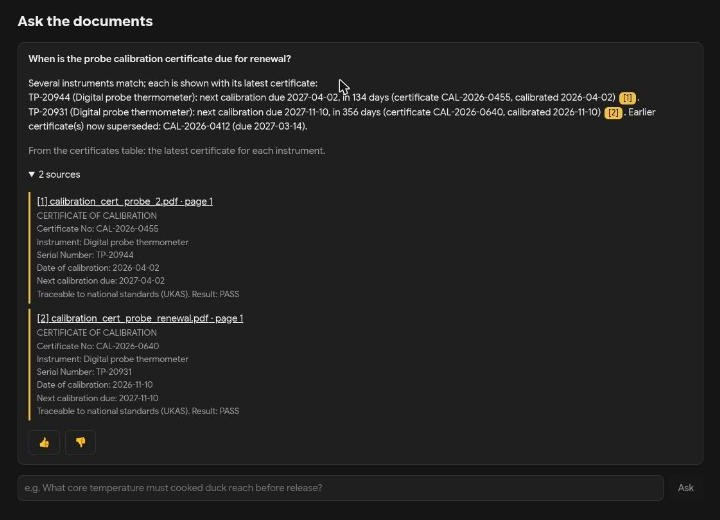

Case Study — GenAI
KVACK — AI Document Assistant

Problem
The quality team works from hundreds of PDFs: product specs, calibration certificates, lab reports and SOPs. Finding one date or limit meant opening document after document.
Approach
- Python and FastAPI back end, with RAG search over Qdrant so every answer cites its source page
- A LangGraph agent that drafts reminder emails but waits for a person to approve them
- The AI reads and writes; code makes the decisions (due dates, spec checks)
- React and TypeScript front end, tested in GitHub Actions and monitored with Langfuse and Grafana
Outcome
Answers questions across 550+ product specs, checks lab reports against specs, and sends unclear scans to a person for review. Processing a 29-certificate PDF went from over an hour to about 40 seconds.